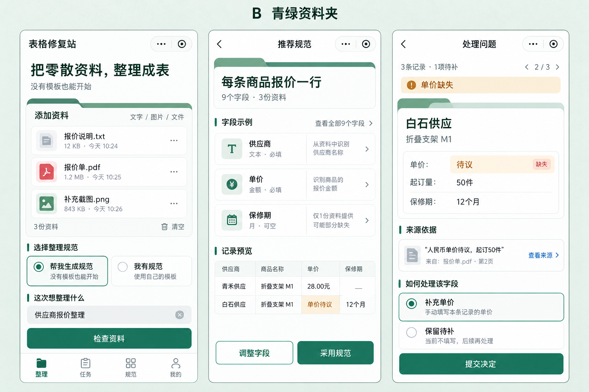
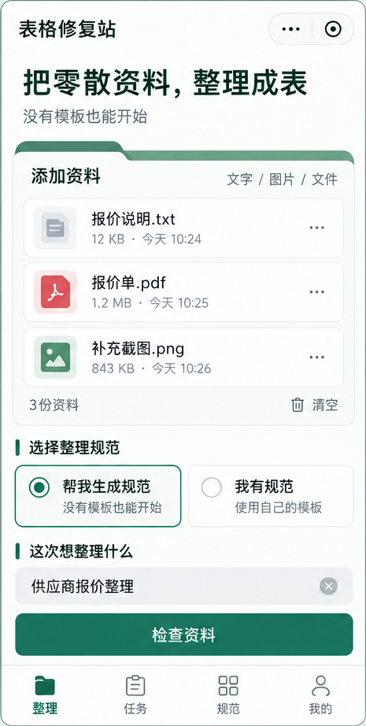
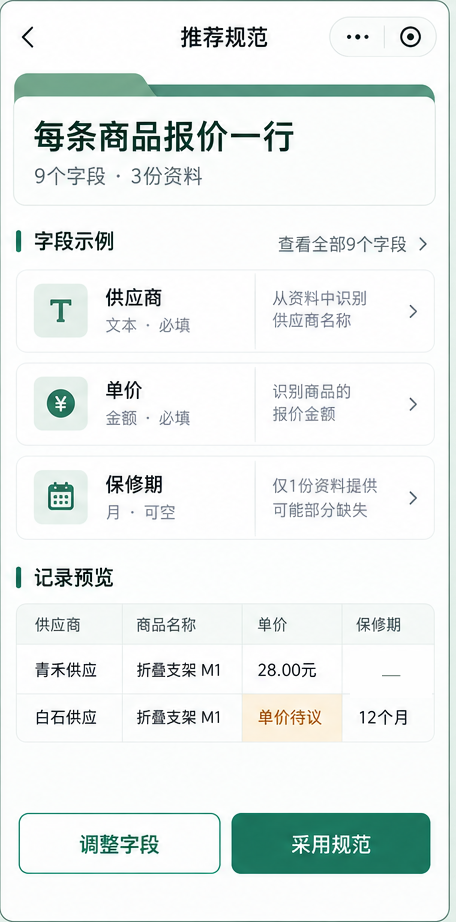
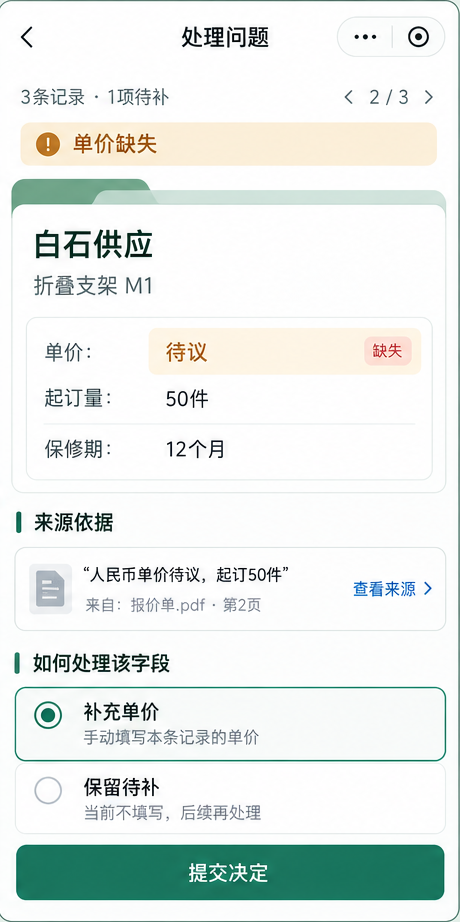

B · 青绿资料夹
用户已选定 · P07-DS-B 1.0.0用资料夹页签、青绿索引和干净白色阅读区，把零散资料整理成可信的表。支付宝、抖音小程序优先，Web进阶版沿用同一体系。
已选稿，原样留存
完整保留用户选定版本；点击查看原尺寸。图稿中的合成数据和宿主顶栏是示意，具体实施按定型规则。



三页视觉锚点






实施细化：链接统一青绿；主按钮纯色。问题页初始不预选决定，选择补值后展开输入，值有效才可提交。保留待补仍是待补。完整规范须能查看9字段。原生胶囊和系统栏按宿主实现。
设计变量
正文16/24、主操作16/24、首页短标题24/34。页面边距16、分区24、行距8；主按钮高48、优先52；控件圆角8、分区12。LU为375宽参考坐标，字体/触控不得随窄屏缩到不可用。
canvas#EAF1EEsurface#FFFFFFsurfaceSubtle#F6F9F7ink#203C32textSecondary#5E7167textDisabled#89968Ebrand#17745EbrandPressed#105F4DbrandTint#E8F3EDbrandBorder#A8C8B8onBrand#FFFFFFline#D4E2DAcontrolBorder#6F897Cfocus#17745EfolderTab#BED8C9folderRule#4A8B70decorativeGold#BD8A33successText#17745EsuccessBg#E8F3EDwarningText#875A18warningBg#FFF3DBerrorText#B33E32errorBg#FDF0EDinfoText#306071infoBg#EDF4F6disabledBg#E3EBE6neutralText#5E7167neutralBg#F0F4F1文字层级
| 角色 | 字号 / 行高 | 字重 |
|---|---|---|
| display | 24 / 34 LU | 600 |
| appTitle | 17 / 24 LU | 600 |
| sectionTitle | 18 / 26 LU | 600 |
| fieldLabel | 16 / 24 LU | 500 |
| body | 16 / 24 LU | 400 |
| helper | 14 / 22 LU | 400 |
| caption | 12 / 18 LU | 400 |
| action | 16 / 24 LU | 500 |
| value | 20 / 28 LU | 600 |
32个组件合同
按用途和状态复用，点击展开。绿色选中与内容通过、执行完成与付款到账分别表达。
B-C01 宿主标题栏与页面骨架
页面名称/返回/宿主胶囊边界
系统区域由宿主保留；页面内容不侵入胶囊；详情页有返回，回到原列表位置。
B-C02 资料夹分区
核心资料/规范/记录容器
白底、青绿页签和顶线；每页最多一个重点资料夹，其余分区用普通行，不将每张卡拟物化。
B-C03 索引分区标题
标记同层内容分组
左侧青绿短线配文字标题；索引线不参与点击，不表示数据通过。
B-C04 主次与危险按钮
推进或确认动作
主按钮纯青绿白字，次按钮白底青绿字，危险按钮深红；每一视图最多一个主动作，忙碌不重发。
B-C05 图标动作
返回/更多/移除等操作
图标20/24，实际触控至少48设计单位；删除和清空有明确范围/后果，不只露一个难点叉号。
B-C06 资料行与上传队列
显示来源角色/接收/解析状态
文件名最多两行且可看全名；大小/来源状态文字明确，RECEIVED不写已解析；同名不覆盖。
B-C07 规范模式选择
有规范与生成规范入口
两项同级互斥，左/上为帮我生成规范；窄屏纵排，不挤小字；用选中圆点、边框和文字共同表态。
B-C08 用途与文本输入
文字材料、可选用途、命名
标签常驻，失焦/提交校验；清空可恢复未提交草稿；默认系统粘贴，不启动读剪贴板。
B-C09 预检与报价摘要
范围/单位/排除/服务合同
费用单位明确，范围变化重新确认；局部预检不冒充全量，未开通通道不显示可成功收银。
B-C10 阶段进度
服务端任务和待办提示
阶段名与已核实范围，不画虚构精确百分比；离开可恢复，关闭通知仍能查询。
B-C11 推荐规范摘要
一行对象、字段数、规范状态
重点资料夹显示行粒度；采用前标草案；部分草案不能当全范围正式规范。
B-C12 字段目录行
字段名/规则/依据
名称、类型/单位、必填/可空和理由可读；仅出现一次的字段不删；图标不是唯一字段含义。
B-C13 字段编辑与影响摘要
修改类型/规则/列序
增删/重排可操作，顺序有上移下移替代；关键变化先看影响，不自动放宽验收。
B-C14 结果记录卡
一条候选的摘要与去向
显示3—5关键字段、明确状态/来源入口；同名不同人不借样式暗示已合并。
B-C15 选列表格预览
少量列的代表预览
手机默认卡片，预览少量列，必要局部横向滚动；表外页面不横溢；空值—不等于0。
B-C16 问题状态条与标签
缺项/冲突/风险/未知提示
文字+图形+色彩；待补用琥珀色，失败深红，内容通过写明已通过，不以绿边框替代。
B-C17 来源摘录卡
原文证据和定位
文字引文/文件页码、查看来源；链接按青绿token，不能补造来源或把模型重写当原文。
B-C18 问题决策与金额输入
补缺、选依据、保留待补
初始不替用户决定；补价须输入有效数和明确单位后能提交，保留待补明确提交后仍待补。
B-C19 固定操作区
页面末端核心推进
为正文预留高度和底部安全区；键盘弹出可看到输入/错误/按钮，不叠在宿主导航上。
B-C20 四项底部导航
整理/任务/规范/我的
仅四根页面出现；相同线性图标、当前项青绿+文字；详情不用重复全局导航。
B-C21 任务行
任务搜索/状态/恢复
同一任务修订不分成新订单；显示下一待办与期限，点击取服务端新版本。
B-C22 私有规范卡
主动保存与复用模板
名称/字段数/版本；私有非公开；删除不改旧任务快照，去事实/证据/访问引用再保存。
B-C23 交付文件卡
手机领取三常用文件
结果Excel唯一强主色，空白规范/问题报告次按钮；获取/缓存/打开/实际导出措辞分开。
B-C24 订单和退款状态块
原渠道付款/履约/售后
金额/平台单位准确；客户端success非实付，退款处理中不写已到账；不跨平台外跳。
B-C25 确认对话框与底部面板
明确有后果动作/有限选项
有取消/返回、可见标题和动作对象；长编辑用整页，关闭不等于保存，后果不能只写“确定”。
B-C26 空/加载/失败反馈
帮助用户继续任务
说明发生什么和下一步；慢任务可离开；失败就近保留重试，不能只闪toast。
B-C27 隐私/权限与数据管理
按需同意及范围删除
处理前必要告知，权限按需；不强制头像手机号；删除/模板/结果/账务分开说明。
B-C28 短反馈消息
低风险动作确认
仅用于已保存等可恢复动作；支付/采用/删除等结果在页面持久显示，不以短消息充当唯一证据。
B-C29 搜索筛选与分页
定位记录和待办
游标默认20，区分总候选与筛选结果；返回恢复筛选/位置，不一次渲染1000条及原图。
B-C30 来源原文/页图预览
查看原资料证据
按需加载、有页/段定位和返回；图可放大；真机能力未证不依赖宿主XLSX/PDF查看器。
B-C31 平台能力说明
输入/交易/导出可用性
说明具体限制及获准替代方式；未证办公文件入口关闭，不用蓝绿成功标识掩盖受限。
B-C32 版本冲突与修订摘要
采用/编辑/复验前核版本
保留本地草稿，展示新旧版本/影响再操作；旧请求不覆盖新结果，不重复扣轮次。
18页定型规则
根导航固定为整理、任务、规范、我的。列表与问题是手机主操作形式；宽表按需选列，不要求用户逐格审阅正常数据。
| 页面 | 主要动作 | 约束 | 图稿状态 |
|---|---|---|---|
| MP01 整理首页 | 检查资料 | 优先放资料入口；已接收的合成3文件示例参照留存稿。实际首次进入为空状态，点资料夹进入来源添加。生成规范为正常入口，与我有规范同级。至少一项已收到可读来源才检查；不可读/超限就近提示。 | 三页图像参照之一 |
| MP02 资料清单 | 继续检查 | 白底列表，不给每文件再加资料夹页签；已完成项保留，失效临时文件需重选。普通文档入口仅按能力开关显示。移除已冻结来源先说明范围影响；规范文件单列不当事实。 | 规则定型，尚无独立图稿 |
| MP03 规范输入 | 使用此规范 | 我的规范/获准上传/字段编辑三种来源。沿用B字段目录，不强迫逐列来源映射。带样例解释而非事实；未明确粒度/关键约束时澄清，不以付款默认同意。 | 规则定型，尚无独立图稿 |
| MP04 预检与报价 | 确认并开始 | 一次只突出当前合法启动动作；获准交易用对应平台收银，免费许可标明免费。报价变更再确认；局部预检标范围；不可收费环境不引导外站付款。费用/保留/修订无需藏在长文本末端。 | 规则定型，尚无独立图稿 |
| MP05 处理进度 | 查看待办（有待办时） | 用阶段列表和文本状态，普通处理中无强制主按钮，可离开。WAITING_SCHEMA指向MP06；需要补值指向MP09。系统错误提供恢复/帮助，不把手机退出当取消。 | 规则定型，尚无独立图稿 |
| MP06 推荐规范 | 采用规范 | 严格参照B三页中间图视觉；三字段只是9列示例，必有看全部入口。全范围草案可采用，局部只能查看/继续分析；显示未映射重要信息。采用前可调，绑定确切版本。 | 三页图像参照之一 |
| MP07 字段编辑 | 预览修改 | 字段多时分组折叠；规则和单位有可见标签。删列、粒度、单位、必填/键变化先看影响后保存；不按拖动唯一操作。不改变本地草稿直到明确保存。 | 规则定型，尚无独立图稿 |
| MP08 结果概览 | 处理问题；无阻断或合同允许时领取结果 | 默认记录卡，3—5关键字段。总候选=通过+待补+移出仅为候选去向，不能当语义全召回。严格待补突出处理问题；允许的当前版本导出注明待补，不伪称已通过。 | 规则定型，尚无独立图稿 |
| MP09 问题列表 | 处理下一项（有待办时） | 缺项/冲突区分文案。批量只对相同规则/语义，提交前看数量和例外，不能猜定全部冲突。返回MP08保留筛选及位置。 | 规则定型，尚无独立图稿 |
| MP10 记录问题详情 | 提交决定 | 严格参照B右页视觉；交互初始不预选补价。补充单价展开数值和单位输入，未有效填写禁止提交；选择保留待补后可明确提交，但状态仍待补。人工值有来源，不能填0代未知。 | 三页图像参照之一 |
| MP11 来源依据 | 无强制主CTA，保留返回 | 原文阅读区白底，局部命中用淡绿背景和边界，不整页染色。来源到期按实际剩余摘录说明；没有保留内容不伪造新原文。返回保持原记录/滚动位置。 | 规则定型，尚无独立图稿 |
| MP12 结果领取 | 领取结果Excel | 三个常用文件中仅结果Excel用强主色。次按钮领取空白规范、问题报告；更多固定六项。缓存/打开/实际导出分别写；失败不重跑收费；保存规范主动、去事实引用。 | 规则定型，尚无独立图稿 |
| MP13 任务列表 | 空列表新建整理；列表项继续任务 | 重点是继续到准确待办，不铺每任务绿色大按钮。返回前台更新服务端，不信过期本地状态；单任务修订保持同任务。 | 规则定型，尚无独立图稿 |
| MP14 我的规范 | 用此规范整理（选中后） | 列表用资料目录语言，只有当前选择/详情有主动作；默认私有。删除确认范围，新版本不改旧任务。规范源事实已剔除但业务字段仍敏感，不提供默认公开分享。 | 规则定型，尚无独立图稿 |
| MP15 我的 | 无需全页主CTA | 无强制手机号/头像，导航清晰。未完成双向绑定和权益规则时不显示可用跨端绑定按钮，不按昵称合并。帮助入口在各页相同位置可找到。 | 规则定型，尚无独立图稿 |
| MP16 订单详情 | 未知时查询支付状态；已付按待办继续 | 资金状态持久显示，未知不默认新付；退款申请与到账分开。保留原平台/app责任，受限OS不外跳收银；删除源不删除必要售后入口。 | 规则定型，尚无独立图稿 |
| MP17 隐私与数据管理 | 按所选动作明确确认，无一键捆绑同意 | 数据类别和后果说清楚；删除任务不默认删已另存规范，允许另选；账号/账务与正文分离。危险删除用深红，保存/允许不是伪装默认选择。 | 规则定型，尚无独立图稿 |
| MP18 帮助与售后 | 提交问题 | 默认只带必要摘要，真实正文由用户主动附，客服内容访问另授权。具体错误和工单号持久可查，不以toast作为唯一成功凭据；平台售后入口按要求保留。 | 规则定型，尚无独立图稿 |
开发交接与版本留存
先读当前指针与定型总览，再读页面/组件、引用tokens、补齐状态，最后进行双端真机比对。以后修改建立新版本，保留1.0.0原稿与SHA-256记录。